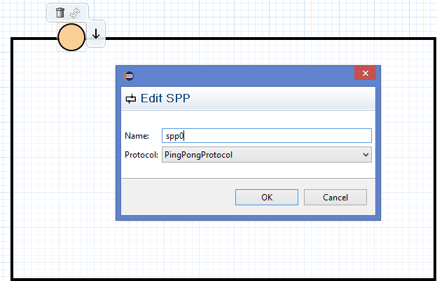

All aspects of the ROOMLanguage can be edited by full-blown textual editors. In addition, graphical editing is provided for the structural and behavioral part of ActorClasses.
| Contains: | ∙ TextualROOMEditor |
Textual model editor |
| ∙ GraphicalStructureEditor |
The Structure Editor allows to edit the ActorClass’ Structure in a convenient way. It is possible to create and arrange actor references and ports and to create bindings and layer connections. |
|
| ∙ GraphicalBehaviorEditor |
The GraphicalBehaviorEditor allows to edit the ActorClass’ StateMachine. It is possible to create (hierarchical) states and transitions to model complex behavior in a convenient way. |
|
The GraphicalBehaviorEditor allows to edit the ActorClass’ StateMachine. It is possible to create (hierarchical) states and transitions to model complex behavior in a convenient way.
| Edits: | ∙ StateMachine |
A StateMachine describes the state based, event driven behavior of an ActorClass. |
The Structure Editor allows to edit the ActorClass’ Structure in a convenient way. It is possible to create and arrange actor references and ports and to create bindings and layer connections.

| Contains: | ∙ StructureEditorPalette |
The palette creates central structural elements of an ActorClass. |
| ∙ ActorRefPropertyDialog |
A dialog to edit properties of an ActorRef. |
|
| ∙ PortPropertyDialog |
A dialog to edit properties of an Port. |
|
| ∙ SPPPropertyDialog |
A dialog to edit properties of a SPP. |
|
| Edits: | ∙ ActorClass |
An actor is the basic structural building block for building systems with ROOM. |
| ∙ ActorRef |
An ActorRef is an instance of an ActorClass. |
|
| ∙ Port |
A Port is an instance of a ProtocolClass and the interface for an ActorClass. |
|
| ∙ SAP |
A Service Access Point is similar to a Port, but uses a LayerConnection for wiring. |
|
| ∙ Binding |
A Binding connects two Ports with each other. |
|
| ∙ LayerConnection |
A LayerConnection associates a SPP to an ActorRef, resulting in an connection of all SAPs on its instance hierarchy. |
|
A dialog to edit properties of an ActorRef.
The dialog is used to edit an existing ActorRef of an ActorClass. It is also shown when creating a new one.

| Edits: | ∙ ActorRef |
An ActorRef is an instance of an ActorClass. |
A dialog to edit properties of an Port.
The dialog is used to edit an existing Port of an ActorClass. It is also shown when creating a new one.

| Edits: | ∙ Port |
A Port is an instance of a ProtocolClass and the interface for an ActorClass. |
A dialog to edit properties of a SPP.
The dialog is used to edit an existing SPP of an ActorClass. It is also shown when creating a new one.

| Edits: | ∙ SPP |
A Service Provision Point is the counterpart of a SAP |
The palette creates central structural elements of an ActorClass.
Selecting an entry from the palette and clicking into the diagram, creates the element at the current position.


| Contains: | ∙ OutlineView |
Displays an overview of all elements in the textual editor. |
| Edits: | ∙ ROOMLanguage |
The Real Time Object Oriented Modeling (ROOM). |
Displays an overview of all elements in the textual editor.
Shows the structure of the current opened model in the textual editor. Select the ’Link with Editor’ option to synchronize the selection of elements between editor and outline view. This enables a convenient navigation.